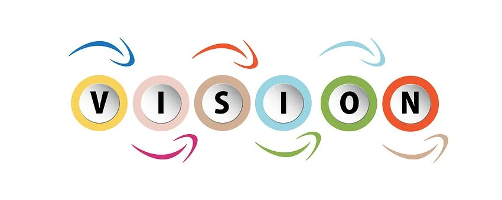

<mat-toolbar color="primary">
  <mat-toolbar-row>
      
     <a routerLink="landing-page" class="title">StartUps</a> 
    <button mat-icon-button [matMenuTriggerFor]="menu" class="example-icon" aria-label="Example icon-button with menu icon">
     
      <!--menu icon-->
      <mat-icon>menu</mat-icon>
    </button>
    <mat-menu #menu="matMenu" class="menu">
     
      <!--about us -->
      <a  class="link" routerLink="/about-us"> <button mat-menu-item>
        <span>About US</span>
      </button></a>
     
     <!--login--> 
     <ng-template #loginButton>
      <a  class="link" routerLink="/admin-login"><button mat-menu-item>
        <span>Admin login</span>
      </button></a>
     </ng-template>
     

    <!--logout-->
      <button mat-menu-item (click)="logout()" *ngIf="authService.userState$ | async ; else loginButton">
        <span>Admin logout</span>
      </button>
    </mat-menu>
  </mat-toolbar-row>
</mat-toolbar>
 

      <router-outlet></router-outlet>

      <mat-toolbar color="primary">
          <!-- <div class="container-fluid py-3"> -->
            <share-buttons theme="circles-black"
              [include]="['copy', 'facebook', 'email', 'linkedin','telegram', 'twitter', 'whatsapp']"
              [showIcon]="true"
              [showText]="false"
              url="https://startup-htu.herokuapp.com/landing-page"
              description="Angular Share Buttons"
              twitterAccount="rodrigokamada"
              class="pt-5">
            </share-buttons>
        <!-- </div>  -->
     </mat-toolbar>
      